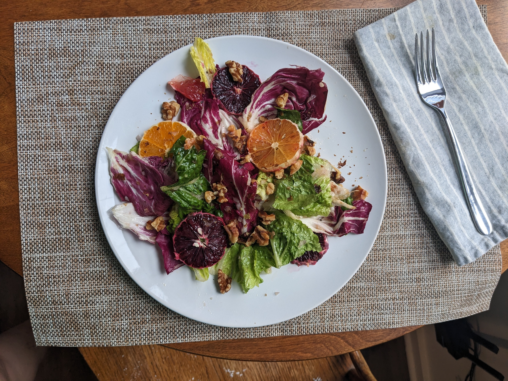

Winter Salad

Description
A fresh and scrumptious wintertime salad.
Ingredients
<1i>Radicchio
- Chicory
- Walnuts
<1i>Assorted citrus fruits
- Salt
- Black pepper
Steps
- Toast the walnuts
- Tear the radicchio and chicory into bite-sized pieces
- Wash the radicchio and chicory pieces thoroughly
- Peel and slice the assorted citrus fruits into rounds
- Juice the extra citrus fruit pieces into the salad bowl
- Toss everything together and add salt and black pepper to taste